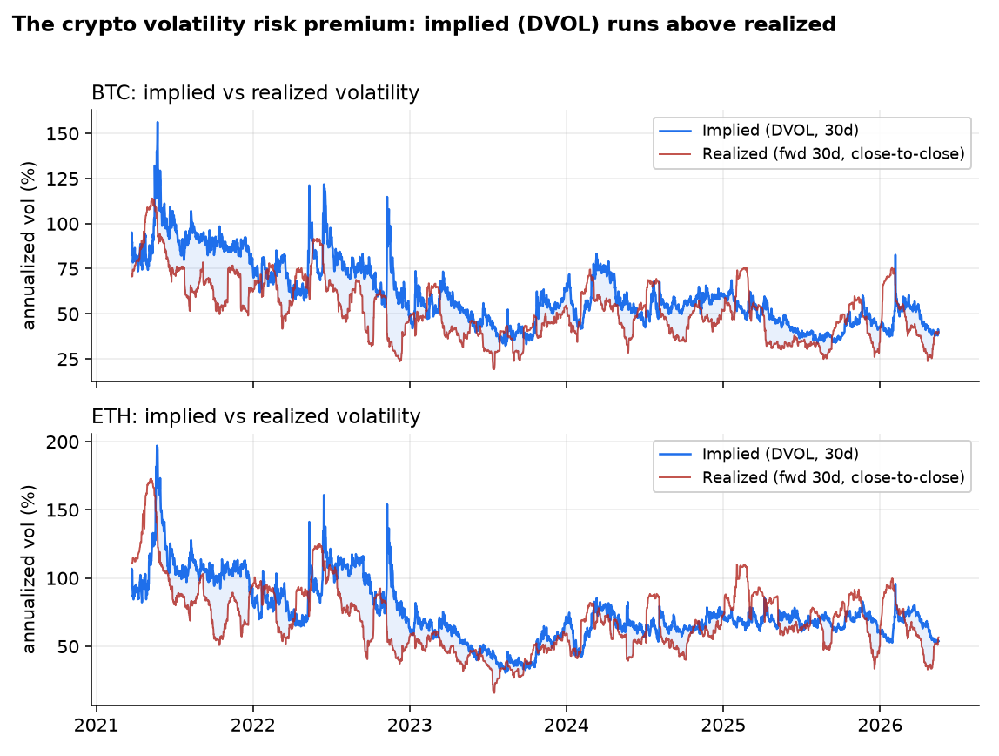
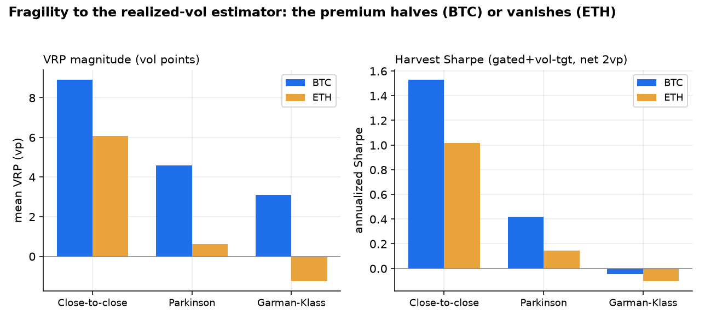
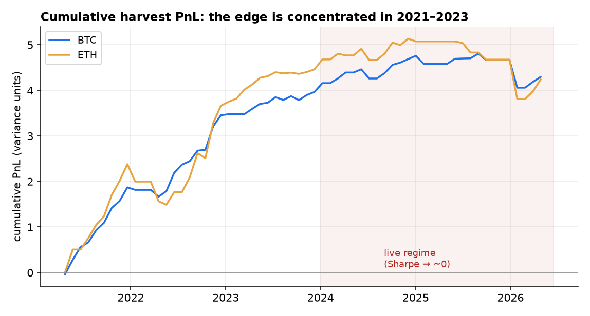
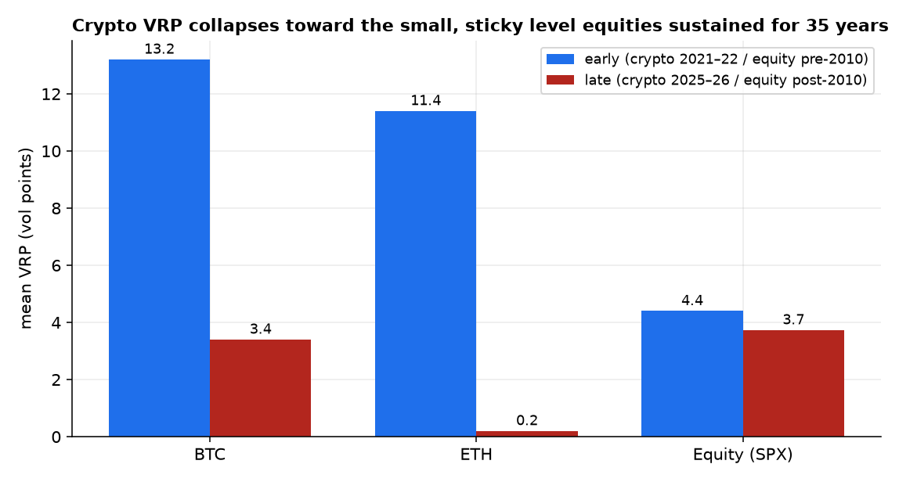
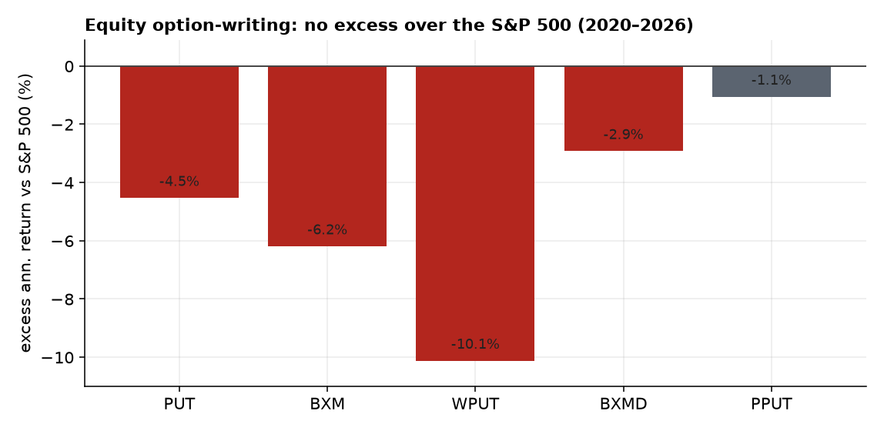

The volatility risk premium (VRP) — option-implied variance minus subsequently realized variance — is one of the most robust facts in asset pricing, and was the one signal that beat its baseline in our prior JEPA study (Deribit DVOL forecast realized vol at IC 0.67 vs 0.55). Here we ask whether it is harvestable net of costs. Using the full Deribit BTC/ETH DVOL history (2021–2026, 12h) and a free equity benchmark (VIX, SPX, Cboe PUT/BXM), we measure the premium and backtest a short-variance-swap harvest through a full rigor gauntlet (deflated Sharpe, PBO via CSCV, purged walk-forward, non-overlapping t-stats, degenerate-signal check). The premium's sign is real and not an overfit (BTC +8.9 vol points, t=4.45, deflated Sharpe 0.88, PBO=0.00; equity +4.1 vp, t=4.22 over 35 years) and it is not merely short spot-beta. But its harvestability is thin and fragile: the headline crypto Sharpe (~1.5) (i) roughly halves for BTC and vanishes/reverses for ETH under range-based (Parkinson/Garman-Klass) realized-vol measurement that better reflects delta-hedged execution; (ii) is concentrated in 2021–2023 and decays to ~0 (BTC) / negative (ETH) by 2024–2026; and (iii) cannot be charged true options-execution costs historically (our surface is a single snapshot). The equity control is the cautionary endpoint: a premium that has persisted 35 years has nonetheless delivered no excess over buy-and-hold since ~2010 (PUT −4.5%/yr, BXM −6.2%/yr, 2020–2026). We conclude the crypto VRP is a genuine risk-compensation premium maturing toward the small, sticky equity level — interesting as a market-maturation signal, not a reliable net-of-cost alpha for a small participant today.
Markets pay a premium to those who sell insurance against volatility: option-implied variance systematically exceeds the variance that subsequently realizes. This variance risk premium is among the best-documented anomalies in finance [1][2], and in our prior work it was the only signal that beat a trivial baseline — Deribit's DVOL index forecast realized volatility at rank-IC 0.67 versus 0.55 for a trailing-realized-vol forecast [8]. That was a forecasting result. This paper asks the harder, money question: is the premium harvestable net of costs? — and benchmarks crypto against the mature equity market to see whether crypto's premium is special or simply a younger, larger version of a fading friction.
This matters because a positive premium and a tradable edge are different things. A variance seller earns the premium in calm periods and pays it back violently in crashes; the relevant question is whether the compensation survives realistic execution and whether it persists. We pre-register falsifiable hypotheses and explicit kill criteria, and we let the rigor protocol — not a flattering backtest — decide:
All data are free and verified on disk. The crypto harvest runs entirely off the implied/realized comparison; the option surface is used only as context (see Limitations).
Leakage control is treated as a first-class concern. The implied leg is the DVOL value known at or before each decision bar (a backward as-of join); the regime gate uses only trailing realized volatility; the variance-swap payoff uses realized variance over the forward 30 days, which is the trade resolving — not look-ahead. Significance is computed on non-overlapping windows (and Newey-West for the overlapping series), so overlapping labels cannot inflate t-stats.
We define the premium in annualized variance units at each bar $t$,
$$\mathrm{VRP}_t \;=\; \big(\mathrm{DVOL}_t/100\big)^2 \;-\; \mathrm{RV}_{t\to t+30\mathrm{d}},$$
where $\mathrm{RV}$ is annualized realized variance over the forward 30 days. We report it both in variance units and in vol points ($\mathrm{DVOL}/100-\sqrt{\mathrm{RV}}$). A short variance swap entered at $t$ has PnL $(\mathrm{DVOL}_t/100-c)^2-\mathrm{RV}$, where $c$ is a round-trip cost in vol points; this is the canonical VRP harvester (DVOL is, like VIX, a fair variance-swap strike).
We backtest passive (always short) versus gated (sell only when implied > trailing realized — positive ex-ante carry) versus gated + vol-targeted (inverse-vol, ≈constant-vega sizing), on non-overlapping 30-day windows, for BTC and ETH separately (we do not pool — the two premia diverge). Crucially, we measure $\mathrm{RV}$ three ways: close-to-close, Parkinson, and Garman-Klass. A variance swap settles on close-to-close variance, but a delta-hedged option harvest — the only realistic way to trade crypto vol on Deribit — realizes the path variance, which the range-based estimators proxy better.
Every claim must clear: a non-overlapping t-stat with hurdle |t|>3; the deflated Sharpe ratio [5] against the expected maximum Sharpe under the null for the number of configurations tried; PBO via CSCV [6] < 0.5; purged + embargoed walk-forward; a degenerate-signal check (a prior in-house system lost money when 67% of its “winners” were constant predictors gaming a diversity-blind backtester); tail-aware metrics (skew, kurtosis, CVaR, max-drawdown) rather than Sharpe alone; and benchmarks against the trivial baselines and the +0.3-Sharpe mean-reversion floor — the only edge that survived our prior equity work.
Implied volatility runs visibly above realized for both assets (Figure 1). BTC's premium is large and significant; ETH's is smaller and marginal on the t>3 bar. The harvest is essentially uncorrelated with spot direction (corr to forward spot return +0.12 BTC, +0.17 ETH) — it is a volatility trade, not disguised long/short beta.

| Asset | VRP (vol pts) | % positive | non-overlap t | Newey-West t | corr to spot |
|---|---|---|---|---|---|
| BTC | +8.90 | 74% | 4.45 | 5.18 | +0.12 |
| ETH | +6.06 | 67% | 2.14 | 1.89 | +0.17 |
| Equity (SPX/VIX) | +4.09 | 86% | 4.22 | — | — |
This is the pivotal finding. The premium's magnitude — and the harvest Sharpe — depend heavily on how realized volatility is measured. Under close-to-close (the variance-swap convention) the BTC premium is +8.9 vp; under the range-based Parkinson and Garman-Klass estimators (which better reflect the path volatility a delta-hedge actually realizes) it falls to +4.6 and +3.1 vp, and the harvest Sharpe collapses from 1.53 to ~0. For ETH the premium vanishes and reverses (Figure 2, Table). The generous close-to-close framing is a researcher degree-of-freedom; the harvest-relevant number is much thinner.

| RV estimator | BTC VRP (vp) | BTC harvest SR | ETH VRP (vp) | ETH harvest SR |
|---|---|---|---|---|
| Close-to-close | +8.90 | 1.53 | +6.06 | 1.02 |
| Parkinson | +4.59 | 0.42 | +0.63 | 0.14 |
| Garman-Klass | +3.10 | −0.04 | −1.24 | −0.10 |
Full-sample, over a grid of 60 configurations (estimator × gate × vol-target × cost), the best crypto config posts a deflated Sharpe of 0.88 (BTC) and 0.55 (ETH) with PBO = 0.00: the premium's sign is statistically real, not a selection artifact. Phase robustness confirms it (BTC Sharpe mean 1.18 across all 60 entry phases). But the edge is not stable — it is concentrated in 2021–2023 and decays to nothing in the live regime (Figure 3). Split-sample Sharpe falls from 2.82 to 0.27 for BTC and from 1.94 to −0.13 for ETH; by 2025 both are at or below zero. This trips our pre-registered kill criterion: the premium has been arbitraged toward zero in our live window.

| Asset | Sharpe 2021–23 | Sharpe 2024–26 | deflated Sharpe (full) | PBO |
|---|---|---|---|---|
| BTC | 2.82 | 0.27 | 0.88 | 0.00 |
| ETH | 1.94 | −0.13 | 0.55 | 0.00 |
The equity VRP is real and remarkably persistent — +4.1 vol points, 86% of days positive, t=4.22 over 1990–2026, declining only mildly post-2010 (a 0.85 ratio vs a crypto collapse). Yet harvesting it has produced no excess over simply holding the S&P since ~2010: the classic PutWrite (PUT) and BuyWrite (BXM) indices underperform buy-and-hold by 4–6%/yr in 2020–2026 (Figure 5), consistent with the literature's finding that traded-option alpha converged to zero as intermediary frictions fell [4]. The premium persists; the alpha does not. And the crypto premium is visibly converging toward this small, sticky equity level (Figure 4).


The results reconcile a paradox: the VRP is one of the most reliable signs in finance, yet a poor trade. The sign is real (BTC t=4.45, equity t=4.22, both surviving deflation), but harvesting it is a different question, and three independent forces shrink the edge to the margin:
The crypto volatility risk premium is a genuine risk-compensation premium that is maturing toward the small, sticky level equities have sustained for 35 years — interesting as a market-maturation signal, but not a reliable net-of-cost alpha for a small participant today.
First, measurement: the headline relies on close-to-close realized variance; under the path-aware estimators relevant to a delta-hedged harvest the BTC edge halves and the ETH edge disappears. Second, decay: nearly all harvest PnL accrued in 2021–2023; the live regime is flat. Third, the equity mirror: even where the premium has persisted for decades, the tradable harvest has beaten nothing since 2010. The natural reading is that crypto in 2021–2022 was an immature market richly paying for volatility insurance, and that premium has been competed down as the market institutionalized (ETFs, more sophisticated vol sellers) — exactly the trajectory the equity control predicts. None of this is rescued by more compute or a bigger model; the ceiling is the (shrinking) signal.
No historical option surface → cost is calibrated, not pathwise. Our Deribit surface is a single end-of-sample snapshot, so we cannot price the full options-execution leg (bid-ask by moneyness/tenor, delta-hedge slippage) at each point historically. We model cost as a round-trip vol-point haircut and report a 0–5 vp sweep; a live calibration anchors it — the current at-the-money Deribit half-spread is ~2.7–3.9% of premium, i.e. ≈2.7 vol points round-trip for both BTC and ETH, validating the 2 vp default — but the out-of-the-money wings of a true variance-swap strip run several percent of premium and would push the (already thin) recent-regime edge further negative. We have begun collecting the Deribit surface forward (periodic bid/ask snapshots) for a genuine historical execution backtest. Realized-vol measurement is itself a degree of freedom. Beyond the estimator (Fig 2), the premium is sensitive to the data source: a 1h cross-check is confounded by exchange (Kraken spot 1h vs Deribit index 12h) and actually yields a higher recent-regime VRP, whereas same-source 12h close-to-close gives a slightly negative one — in the live regime the premium is thin enough that its sign depends on how realized volatility is measured. That is precisely the point; a clean same-source high-frequency test (pre-2024 HF data is unavailable) awaits the forward-collected surface. Sample. 62 non-overlapping windows is thin, and our gate lacks a true term-structure/contango input (no historical surface) — both bias us toward the simplest defensible harvest. Scope. We test BTC and ETH; the smaller-cap, higher-VRP alts (and the term structure, skew, and dispersion dimensions) are left for follow-on work, as is the open question of whether a defined-risk, options-execution-aware structure can monetize the residual premium net of real spreads.